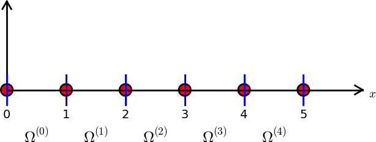

We have to take special actions to incorporate nonzero Dirichlet conditions, such as \( u(L)=D \), into the computational procedures. The present section outlines alternative, yet mathematically equivalent, methods.
In the section Boundary function we introduced a boundary function \( B(x) \) to deal with nonzero Dirichlet boundary conditions for \( u \). The construction of such a function is not always trivial, especially not in multiple dimensions. However, a simple and general construction idea exists when the basis functions have the property $$ \begin{equation*} \basphi_i(\xno{j}) = \delta_{ij},\quad \delta_{ij} = \left\lbrace\begin{array}{ll} 1, & i=j,\\ 0, & i\neq j, \end{array}\right. \end{equation*} $$ where \( \xno{j} \) is a boundary point. Examples on such functions are the Lagrange interpolating polynomials and finite element functions.
Suppose now that \( u \) has Dirichlet boundary conditions at nodes with numbers \( i\in\Ifb \). For example, \( \Ifb = \{0,N_n-1\} \) in a 1D mesh with node numbering from left to right and Dirichlet conditions at the end nodes \( i=0 \) and \( i=N_n-1 \). Let \( U_i \) be the corresponding prescribed values of \( u(\xno{i}) \). We can then, in general, use $$ \begin{equation} B(x) = \sum_{j\in\Ifb} U_j\basphi_j(x)\tp \tag{63} \end{equation} $$ It is easy to verify that \( B(\xno{i})= \sum_{j\in\Ifb} U_j\basphi_j(\xno{i})=U_i \).
The unknown function can then be written as $$ \begin{equation} u(x) = \sum_{j\in\Ifb} U_j\basphi_j(x) + \sum_{j\in\If}c_j\basphi_{\nu(j)}, \tag{64} \end{equation} $$ where \( \nu(j) \) maps unknown number \( j \) in the equation system to node \( \nu(j) \), \( \Ifb \) is the set of indices corresponding to basis functions associated with nodes where Dirichlet conditions apply, and \( \If \) is the set of indices used to number the unknowns from zero to \( N \). We can easily show that with this \( u \), a Dirichlet condition \( u(\xno{k})=U_k \) is fulfilled: $$ u(\xno{k}) = \sum_{j\in\Ifb} U_j\underbrace{\basphi_j(x_k)}_{\neq 0\, \Leftrightarrow\,j=k} + \sum_{j\in\If} c_j\underbrace{\basphi_{\nu(j)}(\xno{k})}_{=0,\ k\not\in\If} = U_k $$
Some examples will further clarify the notation. With a regular left-to-right numbering of nodes in a mesh with P1 elements, and Dirichlet conditions at \( x=0 \), we use finite element basis functions associated with the nodes \( 1, 2, \ldots, N_n-1 \), implying that \( \nu(j)=j+1 \), \( j=0,\ldots,N \), where \( N=N_n-2 \). Consider a particular mesh:

The expansion associated with this mesh becomes $$ u(x) = U_0\basphi_0(x) + c_0\basphi_1(x) + c_1\basphi_2(x) + \cdots + c_4\basphi_5(x)\tp $$
Switching to the more standard case of left-to-right numbering and boundary conditions \( u(0)=C \), \( u(L)=D \), we have \( N=N_n-3 \) and $$ \begin{align*} u(x) &= C\basphi_0 + D\basphi_{N_n-1} + \sum_{j\in\If} c_j\basphi_{j+1}\\ &= C\basphi_0 + D\basphi_{N_n} + c_0\basphi_1 + c_1\basphi_2 +\cdots + c_N\basphi_{N_n-2}\tp \end{align*} $$
Finite element meshes in non-trivial 2D and 3D geometries usually leads to an irregular cell and node numbering. Let us therefore take a look at an irregular numbering in 1D:
Say we in this mesh have Dirichlet conditions on the left-most and right-most node, with numbers 3 and 1, respectively. We can number the unknowns at the interior nodes as we want, e.g., from left to right, resulting in \( \nu(0)=0 \), \( \nu(1)=4 \), \( \nu(2)=5 \), \( \nu(3)=2 \). This gives $$ B(x) = U_3\basphi_3(x) + U_1\basphi_1(x),$$ and $$ u(x) = B(x) + \sum_{j=0}^3 c_j\basphi_{\nu(j)} = U_3\basphi_3 + U_1\basphi_1 + c_0\basphi_0 + c_1\basphi_4 + c_2\basphi_5 + c_3\basphi_2\tp$$
The idea of constructing \( B \), described here, generalizes almost trivially to 2D and 3D problems: \( B=\sum_{j\in\Ifb}U_j\basphi_j \), where \( \Ifb \) is the index set containing the numbers of all the nodes on the boundaries where Dirichlet values are prescribed.
Let us see how the model problem \( -u''=2 \), \( u(0)=C \), \( u(L)=D \), is affected by a \( B(x) \) to incorporate boundary values. Inserting the expression $$ u(x) = B(x) + \sum_{j\in\If}c_j\baspsi_j(x)$$ in \( -(u'',\baspsi_i)=(f,\baspsi_i) \) and integrating by parts results in a linear system with $$ A_{i,j} = \int_0^L \baspsi_i'(x)\baspsi_j'(x) \dx,\quad b_i = \int_0^L (f(x)\baspsi_i(x) - B'(x)\baspsi_i'(x)) \dx\tp $$ We choose \( \baspsi_i=\basphi_{i+1} \), \( i=0,\ldots,N=N_n-3 \) if the node numbering is from left to right. (Later we also need the assumption that cells too are numbered from left to right.) The boundary function becomes $$ B(x) = C\basphi_0(x) + D\basphi_{N_n-1}(x)\tp$$ The expansion for \( u(x) \) is $$ u(x) = B(x) + \sum_{j\in\If} c_j\basphi_{j+1}(x)\tp $$ We can write the matrix and right-hand side entries as $$ \begin{align*} A_{i-1,j-1} &= \int_0^L \basphi_i'(x)\basphi_j'(x) \dx,\\ b_{i-1} &= \int_0^L (f(x)\basphi_i'(x) - (C\basphi_{0}'(x) + D\basphi_{N_n-1}'(x))\basphi_i'(x) )\dx, \end{align*} $$ for \( i,j = 1,\ldots,N+1=N_n-2 \). Note that we have here used \( B'=C\basphi_0' + D\basphi_{N_n-1}' \).
Most of the terms in the linear system have already been computed so we concentrate on the new contribution from the boundary function. The integral \( C\int_0^L \basphi_{0}'(x))\basphi_i'(x) \dx \) can only get a nonzero contribution from the first cell, \( \Omega^{(0)}=[\xno{0},\xno{1}] \) since \( \basphi_{0}'(x)=0 \) on all other cells. Moreover, \( \basphi_{0}'(x)\basphi_i'(x) \dx \neq 0 \) only for \( i=0 \) and \( i=1 \) (but node \( i=0 \) is excluded from the formulation), since \( \basphi_{i}=0 \) on the first cell if \( i>1 \). With a similar reasoning we realize that \( D\int_0^L \basphi_{N_n-1}'(x))\basphi_i'(x) \dx \) can only get a nonzero contribution from the last cell. From the explanations of the calculations in the document Approximation of functions [1] we then find that $$ \begin{align*} \int_0^L \basphi_{0}'(x)\basphi_{1}'(x) \dx &= (-\frac{1}{h})\cdot\frac{1}{h}\cdot h = -\frac{1}{h},\\ \int_0^L \basphi_{N_n-1}'(x)\basphi_{N_n-2}'(x) \dx &= \frac{1}{h}\cdot(-\frac{1}{h})\cdot h = -\frac{1}{h}\tp \end{align*} $$ With these expressions we get $$ b_0 = \int_0^Lf(x)\basphi_1\dx - C(-\frac{1}{h}),\quad b_N = \int_0^L f(x)\basphi_{N_n-2}\dx - D(-\frac{1}{h})\tp$$
As an equivalent alternative, we now turn to cellwise computations. The element matrices and vectors are calculated as in the section Cellwise computations, so we concentrate on the impact of the new term involving \( B(x) \). This new term, \( B'=C\basphi_0' + D\basphi_{N_n-1}' \), vanishes on all cells except for \( e=0 \) and \( e=N_e \). Over the first cell (\( e=0 \)) the \( B'(x) \) function in local coordinates reads $$ \frac{dB}{dx} = C\frac{2}{h}\frac{d\refphi_0}{dX},$$ while over the last cell (\( e=N_e \)) it looks like $$ \frac{dB}{dx} = D\frac{2}{h}\frac{d\refphi_1}{dX}\tp$$ For an arbitrary interior cell, we have the formula $$ \tilde b_r^{(e)} = \int_{-1}^1 f(x(X))\refphi_r(X)\frac{h}{2}\dX,$$ for an entry in the local element vector. In the first cell, the value at local node 0 is known so only the value at local node 1 is unknown. The associated element vector entry becomes $$ \tilde b_0^{(1)} = \int_{-1}^1 \left(f\refphi_1 - C\frac{2}{h}\frac{d\refphi_0}{dX}\frac{2}{h}\frac{d\refphi_1}{dX}\right) \frac{h}{2} \dX = \frac{h}{2} 2\int_{-1}^1 \refphi_1 \dX - C\frac{2}{h}(-\frac{1}{2})\frac{2}{h}\frac{1}{2}\frac{h}{2}\cdot 2 = h + C\frac{1}{h}\tp $$ The value at local node 1 in the last cell is known so the element vector here is $$ \tilde b_0^{N_e} = \int_{-1}^1 \left(f\refphi_0 - D\frac{2}{h}\frac{d\refphi_1}{dX}\frac{2}{h}\frac{d\refphi_0}{dX}\right) \frac{h}{2} \dX = \frac{h}{2} 2\int_{-1}^1 \refphi_0 \dX - D\frac{2}{h}\frac{1}{2}\frac{2}{h}(-\frac{1}{2})\frac{h}{2}\cdot 2 = h + D\frac{1}{h}\tp $$ The contributions from the \( B(x) \) function to the global right-hand side vector becomes \( C/h \) for \( b_0 \) and \( D/h \) for \( b_N \), exactly as we computed in the physical domain.
From an implementational point of view, there is a convenient alternative to adding the \( B(x) \) function and using only the basis functions associated with nodes where \( u \) is truly unknown. Instead of seeking $$ \begin{equation} u(x) = \sum_{j\in\Ifb} U_j\basphi_j(x) + \sum_{j\in\If}c_j\basphi_{\nu(j)}(x), \tag{65} \end{equation} $$ we use the sum over all degrees of freedom, including the known boundary values: $$ \begin{equation} u(x) = \sum_{j\in\If}c_j\basphi_j(x)\tp \tag{66} \end{equation} $$ Note that the collections of unknowns \( \sequencei{c} \) in (65) and (66) are different. The index set \( \If=\{0,\ldots,N\} \) always goes to \( N \), and the number of unknowns is \( N+1 \), but in (65) the unknowns correspond to nodes where \( u \) is not known, while in (66) the unknowns cover \( u \) values at all the nodes. So, if the index set \( \Ifb \) contains \( N_b \) node numbers where \( u \) is prescribed, we have that \( N=N_n-N_b \) in (65) and \( N=N_n \) in (66).
The idea is to compute the entries in the linear system as if no Dirichlet values are prescribed. Afterwards, we modify the linear system to ensure that the known \( c_j \) values are incorporated.
A potential problem arises for the boundary term \( [u'v]_0^L \) from the integration by parts: imagining no Dirichlet conditions means that we no longer require \( v=0 \) at Dirichlet points, and the boundary term is then nonzero at these points. However, when we modify the linear system, we will erase whatever the contribution from \( [u'v]_0^L \) should be at the Dirichlet points in the right-hand side of the linear system. We can therefore safely forget \( [u'v]_0^L \) at any point where a Dirichlet condition applies.
Let us redo the computations in the example in the section General construction of a boundary function. We solve \( -u''=2 \) with \( u(0)=0 \) and \( u(L)=D \). The expressions for \( A_{i,j} \) and \( b_i \) are the same, but the numbering is different as the numbering of unknowns and nodes now coincide: $$ A_{i,j} = \int_0^L \basphi_i'(x)\basphi_j'(x) \dx,\quad b_{i} = \int_0^L f(x)\basphi_i(x) \dx, $$ for \( i,j = 0,\ldots,N=N_n-1 \). The integrals involving basis functions corresponding to interior mesh nodes, \( i,j=1,\ldots,N_n-2 \), are obviously the same as before. We concentrate on the contributions from \( \basphi_0 \) and \( \basphi_{N_n-1} \): $$ \begin{align*} A_{0,0} &= \int_0^L (\basphi_0')^2\dx = \int_{0}^{\xno{1}} = (\basphi_0')^2\dx \frac{1}{h},\\ A_{0,1} &= \int_0^L \basphi_0'\basphi_1'\dx = \int_{0}^{\xno{1}} \basphi_0'\basphi_1'\dx = -\frac{1}{h},\\ A_{N,N} &= \int_0^L (\basphi_N')^2\dx = \int_{\xno{N_n-2}}^{\xno{N_n-1}} (\basphi_N')^2\dx = \frac{1}{h},\\ A_{N,N-1} &= \int_0^L \basphi_N'\basphi_{N-1}'\dx =\int_{\xno{N_n-2}}^{\xno{N_n-1}} \basphi_N'\basphi_{N-1}'\dx = -\frac{1}{h}\tp \end{align*} $$
The new terms on the right-hand side are also those involving \( \basphi_0 \) and \( \basphi_{N_n-1} \): $$ \begin{align*} b_0 &= \int_0^L 2\basphi_0(x) \dx = \int_0^{\xno{1}} 2\basphi_0(x)\dx = h,\\ b_N &= \int_0^L 2\basphi_{N_n-1}\dx = \int_{\xno{N_n-2}}^{\xno{N_n-1}} 2\basphi_{N_n-1}\dx = h\tp \end{align*} $$
The complete matrix system, involving all degrees of freedom, takes the form $$ \begin{equation} \frac{1}{h}\left( \begin{array}{ccccccccc} 1 & -1 & 0 &\cdots & \cdots & \cdots & \cdots & \cdots & 0 \\ -1 & 2 & -1 & \ddots & & & & & \vdots \\ 0 & -1 & 2 & -1 & \ddots & & & & \vdots \\ \vdots & \ddots & & \ddots & \ddots & 0 & & & \vdots \\ \vdots & & \ddots & \ddots & \ddots & \ddots & \ddots & & \vdots \\ \vdots & & & 0 & -1 & 2 & -1 & \ddots & \vdots \\ \vdots & & & & \ddots & \ddots & \ddots &\ddots & 0 \\ \vdots & & & & &\ddots & \ddots &\ddots & -1 \\ 0 &\cdots & \cdots &\cdots & \cdots & \cdots & 0 & -1 & 1 \end{array} \right) \left( \begin{array}{c} c_0 \\ \vdots\\ \vdots\\ \vdots \\ \vdots \\ \vdots \\ \vdots \\ \vdots\\ c_{N} \end{array} \right) = \left( \begin{array}{c} h \\ 2h\\ \vdots\\ \vdots \\ \vdots \\ \vdots \\ \vdots \\ 2h\\ h \end{array} \right) \tag{67} \end{equation} $$
Incorporation of Dirichlet values can now be done by replacing the first and last equation by the very simple equations \( c_0=0 \) and \( c_N=D \), respectively. Note that the factor \( 1/h \) in front of the matrix then requires a factor \( h \) to be introduce appropriately on the diagonal in the first and last row of the matrix. $$ \begin{equation} \frac{1}{h}\left( \begin{array}{ccccccccc} h & 0 & 0 &\cdots & \cdots & \cdots & \cdots & \cdots & 0 \\ -1 & 2 & -1 & \ddots & & & & & \vdots \\ 0 & -1 & 2 & -1 & \ddots & & & & \vdots \\ \vdots & \ddots & & \ddots & \ddots & 0 & & & \vdots \\ \vdots & & \ddots & \ddots & \ddots & \ddots & \ddots & & \vdots \\ \vdots & & & 0 & -1 & 2 & -1 & \ddots & \vdots \\ \vdots & & & & \ddots & \ddots & \ddots &\ddots & 0 \\ \vdots & & & & &\ddots & \ddots &\ddots & -1 \\ 0 &\cdots & \cdots &\cdots & \cdots & \cdots & 0 & 0 & h \end{array} \right) \left( \begin{array}{c} c_0 \\ \vdots\\ \vdots\\ \vdots \\ \vdots \\ \vdots \\ \vdots \\ \vdots\\ c_{N} \end{array} \right) = \left( \begin{array}{c} 0 \\ 2h\\ \vdots\\ \vdots \\ \vdots \\ \vdots \\ \vdots \\ 2h\\ D \end{array} \right) \tag{68} \end{equation} $$
Note that because we do not require \( \basphi_i(0)=0 \) and \( \basphi_i(L)=0 \), \( i\in\If \), the boundary term \( [u'v]_0^L \), in principle, gives contributions \( u'(0)\basphi_0(0) \) to \( b_0 \) and \( u'(L)\basphi_N(L) \) to \( b_N \) (\( u'\basphi_i \) vanishes for \( x=0 \) or \( x=L \) for \( i=1,\ldots,N-1 \)). Nevertheless, we erase these contributions in \( b_0 \) and \( b_N \) and insert boundary values instead. This argument shows why we can drop computing \( [u'v]_0^L \) at Dirichlet nodes when we implement the Dirichlet values by modifying the linear system.
The original matrix system (56) is symmetric, but the modifications in (68) destroy this symmetry. Our described modification will in general destroy an initial symmetry in the matrix system. This is not a particular computational disadvantage for tridiagonal systems arising in 1D problems, but may be more serious in 2D and 3D problems when the systems are large and exploiting symmetry can be important for halving the storage demands and speeding up computations. Methods for solving symmetric matrix are also usually more stable and efficient than those for non-symmetric systems. Therefore, an alternative modification which preserves symmetry is attractive.
One can formulate a general algorithm for incorporating a Dirichlet condition in a symmetric way. Let \( c_k \) be a coefficient corresponding to a known value \( u(\xno{k}) = U_k \). We want to replace equation \( k \) in the system by \( c_k=U_k \), i.e., insert zeroes in row number \( k \) in the coefficient matrix, set 1 on the diagonal, and replace \( b_k \) by \( U_k \). A symmetry-preserving modification consists in first subtracting column number \( k \) in the coefficient matrix, i.e., \( A_{i,k} \) for \( i\in\If \), times the boundary value \( U_k \), from the right-hand side: \( b_i \leftarrow b_i - A_{i,k}U_k \), \( i=0,\ldots,N \). Then we put zeroes in row number \( k \) and column number \( k \) in the coefficient matrix, and finally set \( b_k=U_k \). The steps in algorithmic form becomes
The modifications of the global linear system can alternatively be done for the element matrix and vector. Let us perform the associated calculations in the computational example where the element matrix and vector is given by (61). The modifications are needed in cells where one of the degrees of freedom is known. In the present example, this means the first and last cell. We compute the element matrix and vector as if there were no Dirichlet conditions. The boundary term \( [u'v]_0^L \) is simply forgotten at nodes that have Dirichlet conditions because the modification of the element vector will anyway erase the contribution from the boundary term. In the first cell, local degree of freedom number 0 is known and the modification becomes $$ \begin{equation} \tilde A^{(0)} = A = \frac{1}{h}\left(\begin{array}{rr} h & 0\\ -1 & 1 \end{array}\right),\quad \tilde b^{(0)} = \left(\begin{array}{c} 0\\ h \end{array}\right)\tp \tag{70} \end{equation} $$ In the last cell we set $$ \begin{equation} \tilde A^{(N_e)} = A = \frac{1}{h}\left(\begin{array}{rr} 1 & -1\\ 0 & h \end{array}\right),\quad \tilde b^{(N_e)} = \left(\begin{array}{c} h\\ D \end{array}\right)\tp \tag{71} \end{equation} $$
We can also perform the symmetric modification. This operation affects only the last cell with a nonzero Dirichlet condition. The algorithm is the same as for the global linear system, resulting in $$ \begin{equation} \tilde A^{(N_e)} = A = \frac{1}{h}\left(\begin{array}{rr} 1 & 0\\ 0 & h \end{array}\right),\quad \tilde b^{(N_e)} = \left(\begin{array}{c} h + D/h\\ D \end{array}\right)\tp \tag{72} \end{equation} $$ The reader is encouraged to assemble the element matrices and vectors and check that the result coincides with the system (69).